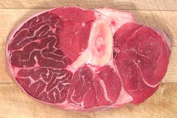

Beef Shank

Center cut Beef Shanks (photo specimen) are great for beef soups and
stews. They include plenty of the most flavorful meat on the beast, and
plenty of connective tissue for a rich stock. The bone is cut in slices
exposing the marrow, and very little of your money goes for fat.
More on Beef Shank
Buying:
These are plentiful in just about any ethnic
market and often even appear in supermarkets. Unfortunately the meat
markets are quite aware of the great properties these shanks posses, so
it's worth shopping for a good price.
Prep:
Wash well to remove saw kerf residue and bone
chips. Depending on your use, you may just want to cut up the shanks and
toss everything into the stock pot for a very strong stock. In other
cases you may want to separate the meat for stew, and use the rest to
make stock. If the bones are large, you may want to split them. Place
the edge of your meat cleaver where you want the split and hit the back
of the cleaver with a heavy soft faced mallet. This will minimize pieces
of bone flying all over everywhere.
Yield:
A 3 pounds 7 ounces tray of meaty shanks (similar
to the photo but with somewhat bigger bones) yielded 1 pound 10 ounces of
clear stew meat (47%), 12-5/8 ounces of marrow bones (23%), of which
2-7/8 ounces was actually marrow (5%), and 1 pound of fat, tendon and
unrecoverable meat (30%).
Stock:
the 30% fat and offcuts plus the 23% marrow bones
all goes into the stock pot. Yes, the fat too, much of the flavor in fat
is water soluble. When you have simmered for a few hours, strain out the
solids and remove the fat using your gravy separator.
Cooking:
The meat from shanks is the finest stew meat,
tough with plenty of connective tissue, but it needs long cooking, even
longer than bottom round.
ab_shankz 101010 - www.clovegarden.com
©Andrew Grygus - agryg@clovegarden.com - Photos on this
page not otherwise credited are © cg1 -
Linking to and non-commercial use of this page permitted